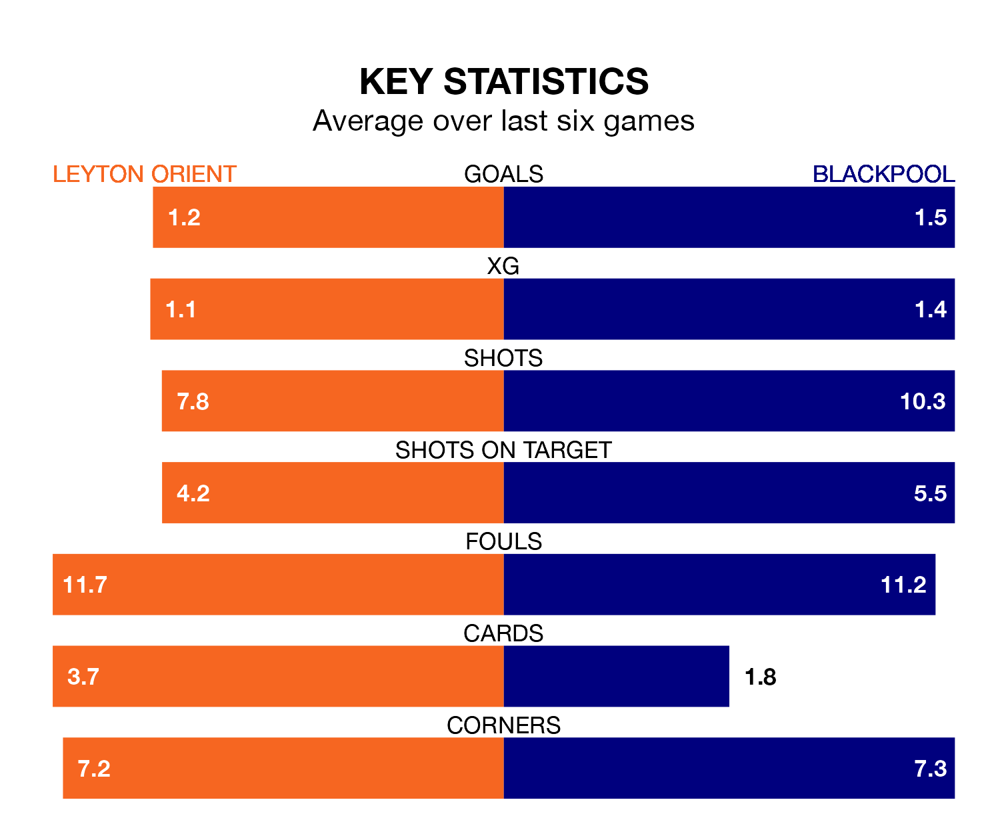

Leyton Orient host Blackpool on Saturday at Brisbane Road in EFL League One.
In their last league match, on Monday, Orient beat Cambridge United 2-0 away, with goals from Daniel Agyei and Jordan Brown.
Blackpool also won, 2-0 at home against Lincoln City, with CJ Hamilton and Oliver Casey on the scoresheet.
In Jordan Rhodes, Blackpool have the league's sharpest shooter so far this season. He has notched 15 goals in 22 appearances.
His goal rate of one every 128 minutes is much quicker than that of Ruel Sotiriou, Orient's top scorer with a goal every 328 minutes, and a total of six goals in 24 games.
With 42 goals in 26 games so far this season, the Seasiders are scoring more than average in the league with 1.6 goals per game. And they are conceding fewer than average, letting in 32 goals at a rate of 1.2 per game.
The home side, meanwhile, are below average scorers, with 1.0 goal per game, compared to a league average of 1.3. They have conceded 1.2 goals per game.
The visitors are eighth in the table after 26 games, of which they have won 11 and drawn six, earning 39 points.
Orient are five places behind Blackpool in 13th, with eight wins and eight draws putting them on 32 points.
Orient are in mixed form in EFL League One, with three wins and a draw from their last six games.
With three wins and three losses over that period, Blackpool's form is slightly worse – they have taken nine points from 18, compared to the hosts' 10.
Updated: 12:57, 02/01/24